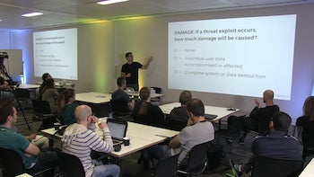

Public speaking
Security - Panel discussion as a panelist
NodeSummit, San Francisco - 2017 July
Node Summit is the largest conference focused exclusively on Node.js and “The Ecosystem of Node”.
Threat Modelling Node.js Applications
FullStack Conference, London - 2017 July
FullStack London is one of the biggest JavaScript-focused conference in Europe, attracting hundreds of developers each year.

Watch the presentation
How Node.js and Microservices Change Your Business
Dreamforce, San Francisco - 2016 October
Read the summary
Node.js in Europe - Panel discussion as a panelist
Node.js Interactive, Amsterdam - 2016 September
Watch the discussion
Learning Node.js - Panel discussion as a panelist
Node.js Interactive, Amsterdam - 2016 September
Node.js Interactive was the first official European conference held by the Node.js Foundation.
Watch the discussion
Security - Panel discussion as a moderator
NodeSummit, San Francisco - 2016 July
Web Security
FullStack Conference, London - 2016 July
From PHP to organizing Node.js Budapest
NodeConf, Barcelona - 2014 October
Watch the slides